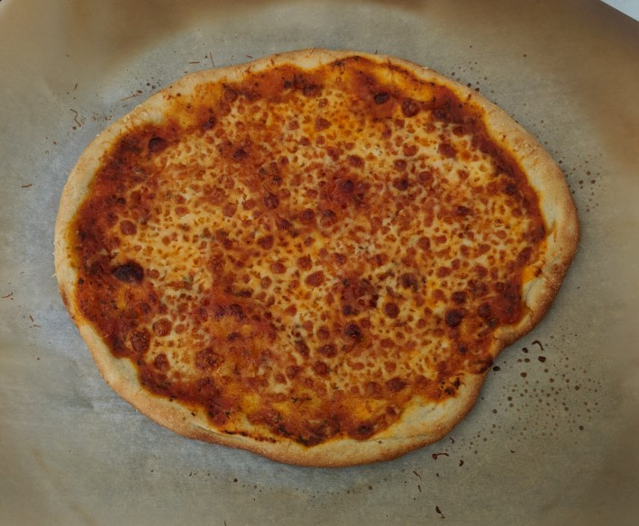

Pizza

Classic Cheese Pizza
This recipe will guide you through making a classic cheese pizza using your home oven.
You will start by making your own pizza dough, following by the steps to prepare and cook
your pizza using your home oven and a pizza stone or steel. One hack will be using a
classic marinara sauce instead of having to cook your own pizza sauce from scratch."
Ingredients
- 380 grams tipo 00 or all-purpose flour
- 10 grams + pinch sugar
- 6 grams fine sea salt
- 1 gram diastatic malt powder (optional)
- 245 grams water at 90° F
- 5 grams instant yeast
- 1 28oz can crushed tomatoes
- 2 gloves garlic
- 30 ml extra virgin olive oil
- Salt to taste
- 1lb part-skim or full-fat mozzarella
- Grated parmesan
Steps
- Mix flour, sugar, salt, malt powder (optional), water, and yeast in a stand mixer.
- Mix on low speed to incorporate, then on medium speed for 8-10 minutes until
dough pulls away from the sides and can be stretched without being torn.
- Let dough ferment in an oiled bowl for an hour.
- Cut dough into two portions. Fold sides of dough inwards to form a ball, and then
roll on an un-floured countertop to close the seam at bottom. Place dough balls into
separate containers and put in fridge at least overnight, preferably for 24 hours.
- Add tomatoes to bowl with garlic, olive oil, pinch of salt, and pinch of sugar. Use an
immersion blender to blend until smooth. If you prefer a cooked sauce, add sauce to
pan and reduce for 10-15 minutes. Allow to cool.
- Grate mozzarella and set aside.
- Take dough out of fridge and allow to come to room temperature while over pre-heats to
500° F or as hot as your oven will go. Flatten dough and use hands to stretch into a 12"
pizza round.
- Lightly salt dough. Spread 3-4 spoonfuls of sauce across dough evenly. Add grated
mozzarella. sprinkle grated parmesan on top of pizza.
- Cook for 10 minutes on a pizza stone or steel that has pre-heated with oven.
- Allow pizza to cool for 5 minutes. Cut and serve.